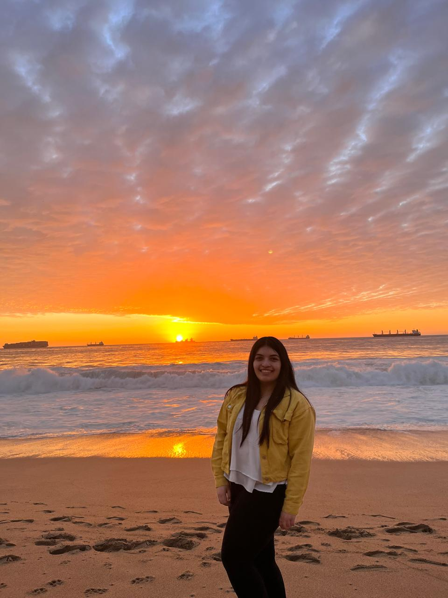

Perfil
Estudiante de cuarto año de Periodismo con gran capacidad de trabajo en equipo y fuerte compromiso hacia el impacto social positivo. Apasionado por la investigación, redacción y edición, con una rica experiencia en voluntariados que buscan mejorar la comunidad..
Experiencia Laboral
-
Natura
Puesto: Vendedora de productos de catalogo.
2020 - 2022
-
Arietta Store
Puesto: Vendedora de productos online.
2022 - 2024
Educación
-
Colegio Marta Colvin Andrade
Educación básica
2007-2015 Colegio
-
Colegio Yire
Educación Media
2016-2017
-
Colegio Enrique Salinas Buscovicha
Educación Media
2018-2019
-
Pontificia Universidad Católica de Chile
Estudiante de Periodismo
2021-Actualidad
Habilidades
- Me destaco por mis sólidas habilidades de sociabilidad, evidenciadas en mi capacidad para comunicarme eficazmente con colegas y clientes, fomentando un ambiente de trabajo colaborativo y positivo. Soy una persona altamente motivada, comprometida con la excelencia en todas las tareas asignadas, y mantengo niveles de energía y entusiasmo constantes, incluso en situaciones desafiantes. Mi historial demuestra una notable productividad, con la capacidad de cumplir objetivos dentro de plazos establecidos, priorizando eficientemente y trabajando de forma autónoma para generar resultados tangibles que contribuyan al éxito general del equipo o empresa.
Contacto
Email: Admartinez5@uc.cl
Teléfono: 9 48008300